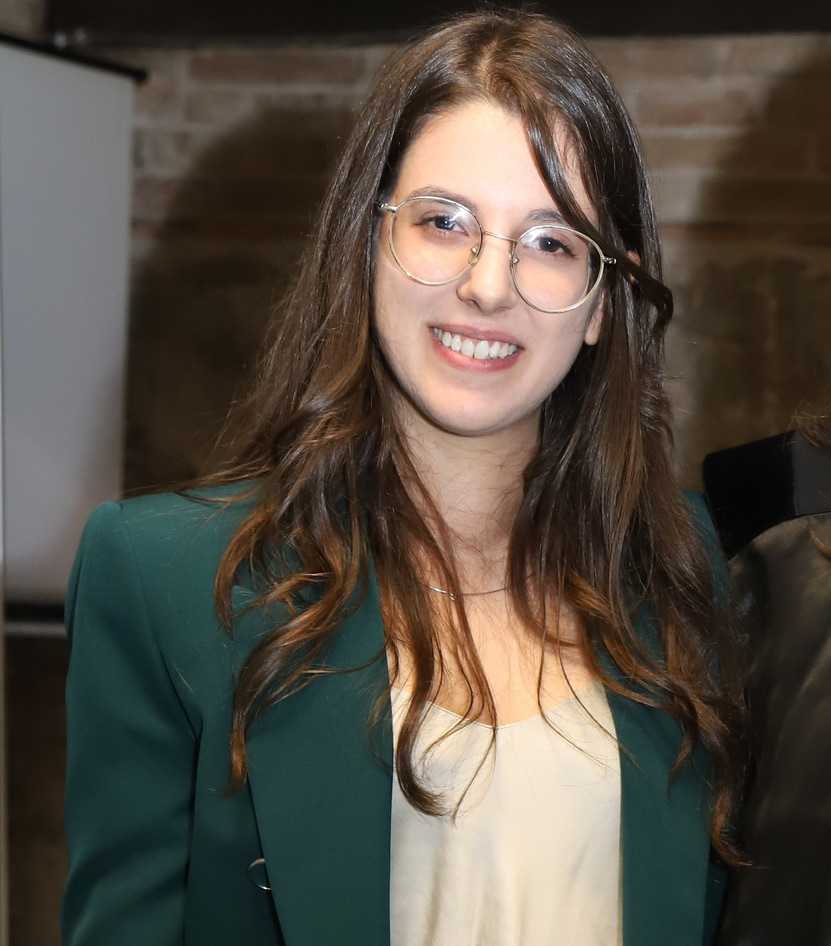

18-May-2026 — Present
IT Consultant
Akinda Italia S.r.l.
I develop automation solutions for business processes and operational workflows, alongside AI-powered systems that automate customer interactions through Meta’s messaging channels.
COMPUTER SCIENCE & ARTIFICIAL INTELLIGENCE
M.Sc. in Computer Science and Artificial Intelligence, with experience in wearable sensing, human activity recognition and machine unlearning.


Hi, I’m Susanna. My work brings together machine learning, sensor data and software development.
I studied Computer Science at the University of Urbino ‘Carlo Bo’, where I completed my master’s degree with a curriculum in Artificial Intelligence. During my studies and research, I explored how data from wearable sensors can help recognise human activities, with particular attention to the energy and computation these systems require.
That work took me from signal processing and feature selection to building IoT prototypes and evaluating machine learning models. For my master’s thesis, I focused on machine unlearning applied to time series and human activity recognition, exploring how models can forget information they have learned.
Alongside research, I develop software projects that let me explore different ideas in practice: from conversational agents and numerical simulations to mobile apps and web APIs.
18-May-2026 — Present
I develop automation solutions for business processes and operational workflows, alongside AI-powered systems that automate customer interactions through Meta’s messaging channels.
02-Feb-2026 — 15-May-2026
Designed a blockchain-based logging system for hospital and clinical sanitization workflows, supporting the digitalization and traceability of disinfection processes.
15-Jan-2024 — 15-Dec-2025
Developed IoT prototypes and machine learning models to recognise activities from wearable sensor data. Analysed signals, selected relevant features and evaluated models with a focus on computational efficiency and energy consumption.
01-Feb-2023 — 31-Jul-2023
Investigated digital signal processing methods for extracting features from wearable sensor data. Evaluated their effectiveness in machine learning models for human activity recognition.
Work on wearable sensors, activity recognition and efficient AI.
Google ScholarChiara Contoli, , Emanuele Lattanzi
Accepted at the 21st International Conference on Artificial Intelligence Applications and Innovations (IFIP AIAI 2025)
Cyprus (CY),
Emanuele Lattanzi, Chiara Contoli, Lorenzo Calisti, Giacomo Di Fabrizio, Nicholas Kania,
Published in IEEE Access, Vol. 13, pp. 68245–68258
, Chiara Contoli, Emanuele Lattanzi
Presented at the 9th International Workshop on Sensor-Based Activity Recognition and Artificial Intelligence (iWoar 2024)
Potsdam (DE),
, Chiara Contoli, Emanuele Lattanzi
Presented at the 3rd Workshop on Pervasive and Resource-Constrained Artificial Intelligence (PerConAI)
Biarritz (FR),
Read publication DOI: 10.1109/percomworkshops59983.2024.10502733
02-Oct-2023 — 19-Feb-2026
Curriculum: Artificial Intelligence
Thesis: Machine Unlearning applied to Time Series and Human Activity Recognition
Grade: 110/110 cum Laude
28-Sep-2020 — 21-Sep-2023
Curriculum: Signal Processing
Thesis: Impact of feature selection on pattern identification in handwashing
Grade: 108/110
10-Sep-2013 — 20-Jul-2018
A selection of software projects, from AI experiments to everyday applications.
More on GitHubCONVERSATIONAL AI
An academic prototype built with Microsoft AutoGen, combining planning, data tools and retrieval-augmented generation for hypertension-related conversations. Compares round-robin and dynamic agent orchestration.
View repositoryIOT & EDGE AI
An environmental monitoring system built on four ESP32 nodes. Uses lightweight TensorFlow Lite models to predict temperature and humidity during sensor failures, with ESP-NOW communication and data logging in InfluxDB Cloud.
View repositoryNUMERICAL SIMULATION
A grid-based simulation of interacting individuals, exploring how population density affects the spread of nervous behaviour and the emergence of collective phase transitions.
View repositoryCOMPUTER ARCHITECTURE
An insertion sort implementation in Assembly, optimised with WinMIPS64. Explores loop unrolling, register renaming and instruction reordering to reduce pipeline stalls and improve execution performance.
View repositoryMOBILE DEVELOPMENT
A Flutter app that suggests recipes from the ingredients in a personal pantry. Includes pantry management, recipe discovery through the Spoonacular API and a shopping list, with local persistence in Hive.
View repositoryWEB DEVELOPMENT
A web application and REST API for exploring and managing places of interest around Bologna. Uses georeferenced open data, a map interface and endpoints to add, update and remove locations.
View repository07 / CONTACT
Susanna Peretti
Lecco, Italy